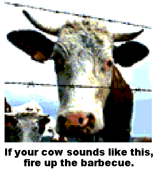
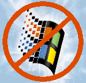

![[mad cow]](madcow2.gif)
Public Service Announcement
How to determine if your cow has mad cow disease...
(Click on each picture.)
The above is
based on a Windows Wordpad file that was e-mailed to me in May 2001; I
made a web page out of it, made the eyes spin in an animated
thGIF so it no longer requires Windows to view. The author is Lenny
Burns, who created it as a Power Point file on April 21, 1997, when he was
otherwise bored. Thanks! 
The original is here. Feel free to download it,
but be sure to credit the original author (Lenny Burns) if you modify it!
Here's something I did when I was bored:
Tired of Windows getting buggier and
slower even while CPU's get faster?
Click the
logo:
This page has been viewed times
since May 3, 2001.
Page created: May 1, 2001. Page last modified: Jan. 15, 2004.